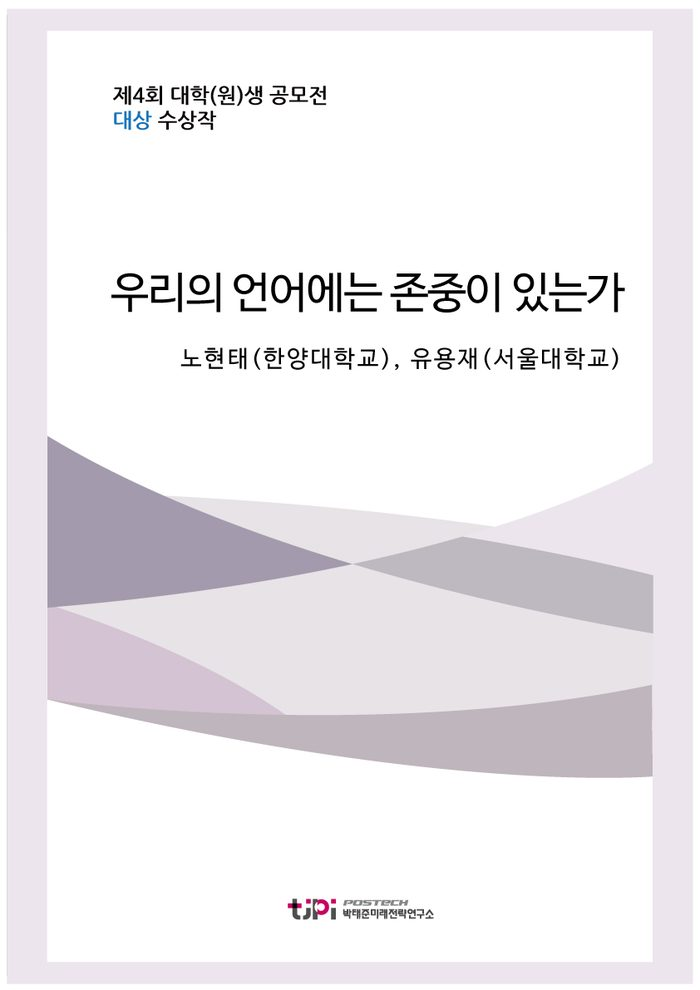

저자 노현태(한양대학교), 유용재(서울대학교)보도일 2017.08.01

요 약
[에세이 대상 수상작]
2017년의 한국 사회에서 보여준 정치적 시민의식의 커다란 성숙에 뒤를 이어, 2020년을 바라보는 한국 사회에서 시민사회의 언어적 성숙이 꽃피기를 기대하는 내용이다.
▶ 대상 발표 및 토론 영상 보기
<2017 에세이 공모주제>
- 우리나라 국민들의 시민의식 수준을 진단하고, 보다 성숙한 시민의식 함양을 위한 구체적인 방안을 제시하시오.
목 차
들어가며
사회적 약자의 조롱과 공감의식의 결여
갈등을 조장하는 어휘의 지배
명예를 훼손하고 공익집단을 폄하하는 어휘의 사용
언어, 이제 성숙해져야 할 때
하나, 바른 언어를 선도하는 언론과 방송
둘, 학생들의 언어 변화를 이끌어내는 교육
셋, 시민사회가 함께 가꾸는 언어 생태계
마치며
내 용
[2017 청년 에세이 대상] 우리의 언어에 존중이 있는가
노현태(한양대학교), 유용재(서울대학교)
들어가며
‘국가의 불의는 국가를 몰락으로 이끄는 가장 정확한 길이다’라고 말한 글래드스턴의 말에 경각심이 생겨서일까? 지난 16년 10월부터 약 5개월간
벌어진 광화문의 뜨거운 외침에서, 부드럽지만 날카롭고 평화롭지만 의연했던 시위 속에서, 우리는 한국의 민주주의, 나아가 정치적 시민의식의 성숙을 목도할
수 있었다. 시민들은 평화롭게 행진하였고, 일체의 폭력시위
없이, 자발적인 시위현장의 환경미화까지 보여주며 성숙한 시민의식을 보여주었다. 성숙한 시민의식이란 표현은 오히려 부족할 표현일지도 모르겠다. 우직함
속에 들어있는 뜨거운 분노는 때로는 함성, 때로는 정중동(靜中動)의 피켓으로 세련되게 표현되었다. 우리 스스로도 놀랐고, 외신들도 놀랐다. ‘이것이 그 한국이 맞는가?’ 하고. 일련의 정치적 이슈에 분노한 시민들이 자유로이 의견을 표출하고
토론하면서, 오랜 기간 침묵 속에 잠재되어 있던 시민들의 불만이 정치적 행동으로 구현되었다. 80년대에 우리 아버지 세대가 <호헌철폐, 독재타도>를 외치며 넥타이 부대를 결성해 시위에 참여한 것처럼, 그동안 많은 정치적 불의에 맞선 시위들이 있었지만 광화문 시위만큼 평범한 직장인이, 평범한 주부가, 노인이, 중학생이, 고등학생, 대학생이 다 함께 분노하며 참여한 시위는 없었다. 이러한 범국민적, 범 연령대적 참여의 배경에는 우리사회의 변화된
언어적 의사소통이 한 몫을 하였다. 바로 인터넷과 미디어를 통한 의사소통이다.
언론 미디어의 독립성과
YouTube와 같은 1인매체의 확대, 카카오톡과
같은 메신저의 보편화는 평화시위의 마중물 역할을 충실히 해주었고, 남녀노소 가릴 것 없이 전(全)연령대적 참여를 이끌어낸 1등공신의
역할을 하였다. 인터넷과 미디어의 파급력으로 인해 더 이상 정부는 정보를 독점하기 힘들어졌고, 정보의 주도권은 시민사회로 넘어오게 되었다. 그리고 오늘날 우리는
숨 쉬듯이 인터넷을 누리고 있고, 미디어를 소비하고 있다. 모르는
것이 있으면 초록색 창에 검색을 하거나, 친구의 근황을 알고 싶으면 페이스북을 연다. 한국인들은 평균 3시간 이상 스마트폰을 사용하며, 한편 인터넷 이용률은 만 3세 이상 인구에서 88%를 상회한다. 특히 세대별 이용률이 10대 및 20대에서 100%,
60대 이상도 75% 수준으로 매우 높은 편이다. 가구
인터넷 접속률이 99.2%로 175개국의 국제전기통신연합(ITU)회원국 중 단연 1위이다. 그만큼
인터넷 공간의 파급력은 대단하다.
메칼피의 법칙(metcalfe's
Law)에 따르면 통신망의 효용성은 사용자 수의 제곱에 비례한다. 이 법칙에서 인터넷 공간의
엄청난 파급력을 가늠할 수 있다. 그러나 정작 인터넷 속에서의 시민의식은 어떨까? 특히
2020년을 바라보는 이 시점에서, 인터넷 공간 속의 언어 생태에 대해 주목해보지 아니할
수 없다. 광화문시위는 인터넷 시민의식의 긍정적 면모를 정말 잘 보여준 사례이다. 하지만 인터넷 공간의 익명성과 불완전한 커뮤니케이션 구조는 자극적인 갈등을 지속해서 조장하고 있으며, 비난일색의 언어는 그 속에서 전염병처럼 창궐하고 있다. 이러한 언어가
인터넷공간을 통해 빠르게 재생산되고, 확대되면서, 또 현대
미디어와 결합되면서 언어에 담긴 시민의식은 오히려 실종되고 있는 것이 현주소이다.
사회적 약자의 조롱과 공감의식의 결여
한 사회의 언어사용의 생태는 시민의식 진단의 중요한 척도이다. 인류 언어학자인 워프는 “언어는 우리의 행동과 사고의 양식을 결정하고
주조한다.”고 했으며, 실러겔은 ‘언어는 인간 정신을 그대로 본떠 놓은 것’이라고 했다. 철학자 라이프니츠는 ‘언어는 인간 정신의 가장 훌륭한 반영’이라고 했으며, 헤르더는 ‘우리는
말하는 것을 통해 사고를 배우는 것이니까, 사고는 언어에서, 언어로써, 그리고 언어를 통해 형성되는 것’이라고 했다. 문제는 한국 사회에서, 특히 인터넷 공간을 중심으로 사회적 약자의
조롱과 멸시가 끊임없이 이뤄지며, 이러한 행태가 반영된 언어가 인터넷을 넘어 신조어로서 실생활에서도
영향력을 행사한다는 것이다. 어느 신문기사에서 후천적으로 장애를 가진 대리운전기사의 사연을 읽은 적이
있다. 그는 공장에서 일을 하다가 불의의 사고로 손가락을 잃었다. 여느
때처럼 대리운전을 하러 손님을 찾아갔는데, 해당 손님이 손가락이 없는 그를 보고 뱉은 첫 마디, “뭐야……. 손 병신이네? 너
운전할 수 있어?” 손님은 차를 타고 나서도 운전 중인 기사에게 장애인 비하 발언을 비롯한 모욕적 언행을
했다고 한다. 이처럼 ‘장애인’이라는 일반명사와
관련 단어 자체가 타인을 비하하는 용어로 악용되고 있으며, ‘흑형’ 등
인종차별적 발언 또한 서슴없이 사용되고 있다. 지금 든 예시는 그나마 표현 수위가 낮은 편에 속한다. 최근에는 ‘답답하다’라는
의미에서 ‘암 걸린다’라는 표현이 만연하게 쓰이고 있다. 이러한 사회적 약자에 대한 조롱과 공감의식이 결여된 표현은 점점 자극적으로 변하며 위험 수위를 넘나들고 있다. 이러한 약자(弱者)멸시적
표현이 어린 학생들에 의해 무분별하게 사용되면서, 아이들은 해당 표현의 수위에 대해 무감각해지게 되었다. 앞서 언급한 헤르더가 이야기 하였듯이, 사고는 언어를 통해 형성된다. 자연스럽게 이러한 멸시, 비하 풍조가 그들의 사고와 행동에 잠재되어
표출될 걱정을 하지 아니할 수 없다. 이와 같은 문제의 근본 원인이 인터넷이라고 생각되는가? 정말 인터넷이 문제일까. 만약 우리 사회가 보다 사회적 약자를 배려하는
멋진 시민의식을 갖춘 사회였다면, 지금 살펴본 것과 같은 문제는 일어나지 않았을 것이다. 결국 이러한 세태의 근본적인 원인에는 사회의 경쟁적 풍조의 굴레에서 벗어나지 못한 한국 사회의 시민의식에 있다. 남에 대한 배려를 오지랖이라고 생각하는 사회, 뒤처짐에 대해 쓸모없음으로
규정하는 사회, 타인에게 상처 주는 것을 자기합리화 하는 사회에서 사회적 약자에 대한 공감은 사치로
치부될 수밖에 없다.
갈등을 조장하는 어휘의 지배
한편으로 한국사회의 언어 생태계에는 분열과 갈등을 조장하는
어휘가 그 어느 때보다 팽배해 있다. 평화시위로서 높은 수준의 시민의식을 보여준 광화문 시위와는 다르게
안타깝게도 인터넷에서는 극심한 세대갈등이 나타났다. 젊은이뿐만 아니라 노년층까지 인터넷 접속률이 높아지자
인터넷에서는 노인층을 ‘틀딱’이라며 비하하는 용어가 난무하였고, 소리 내어 읽기 힘들 정도의 모욕적 언사가 넘쳐났다. 검색어의 검색빈도를
알려주는 구글 트렌드(Google Trend)에 따르면, ‘틀딱’의 검색 빈도는 15년 12월
이후 점차 증가하여 16년 12월 최고점을 기록하였다. 한창 탄핵 여론이 거세지던 시기였다. 뿐만 아니라 지역갈등을 조장하는
용어도 끊임없이 확대ㆍ재생산되고 있으며, 지역갈등을 넘어 남녀 갈등을 부르는 어휘들도 심각한 수준이다. 논란이 있었던 여초 사이트의 명칭에서 비롯된 ‘메퇘지’, 남성 비하 단어인 ‘한남충’ 등
이 시간에도 계속 분열과 갈등을 일으키고 있다. ‘왜 이렇게 갈등을 조장하지 못해 안달이 난 것일까?’라고 생각될 정도로 말이다.
이러한 자극적인 언어는 사용자로 하여금 극단적 혐오감을 표출시키고, 대상에 대한 낙인과 조롱을 심는다. 또한 갈등이 일어나면서 중립적이던
사람들도 한쪽으로 몰리게끔 분위기가 조성되는 경우가 많으며 꼬리에 꼬리를 물 듯 끊임없이 확대되는 경우가 많다.
인터넷상에서 발현된 혐오가 자칫 상대에 대한 혐오범죄 등으로 이어질 수 있다는 점에서 자극적 언어의 확산은 결코 가볍게 다루어선 안
될 문제이다. 이러한 난제의 발단에는 앞서 근본적 원인으로 지목한 경쟁적 사회 분위기와 더불어, 인터넷 공간에서 비롯되는 의사소통의 구조적 한계와 사용자의 몰지각성이 복합적으로 작용하는 문제가 존재한다. 우선 인터넷 공간에서는 익명성이라는 가면 아래에 평소 자아와 다른 자아가 얼마든지 등장할 수 있으며, 직접 대면하는 커뮤니케이션이 아닌 만큼 자기중심적 언어사고가 주를 이루게 되고, 제한된 소통 속에서 상대에 대한 섣부른 판단을 내리게 된다. 이는
상대에 대한 비방과 모욕을 쉽게 만들며 이러한 행위가 당사자에게 어떠한 불이익도 주지 않기 때문에, 사용자는
이러한 행태에 대해 무감각해지게 되는 것이다. 이러한 토대에서 성장한 갈등과 자극의 언어는 한국사회의
언어 생태계를 무너뜨리고 성숙한 언어 사용 문화를 가로막는 주범으로 자리 잡고 말았다.
명예를 훼손하고 공익집단을 폄하하는 어휘의 사용
종종 술자리에서 현 시국에 대한 담론이나 우리 사회에 대한
자화상을 성찰해본 경험이 한번쯤 있을 것이다. 여느 술자리가 다 그렇듯이, 취기가 오른 몇몇 테이블에서는 큰 목소리로 우리 사회를 거세게 비판하곤 한다.
그럴 때마다 결코 이야기를 엿들을 의도가 없음에도 불구하고 쩌렁쩌렁한 이야기를 본의 아니게 경청할 수밖에 없는 상황에 놓이게 되었다. 검찰 조직이 어떻다느니, 경찰을 모두 갈아엎어야 한다느니, 하는 그런 이야기들. 그런데 지금 돌이켜 생각해보면 무척 흥미로운
점이 있다. 검찰과 경찰을 맹렬히 비판하는 그들의 입에서 ‘검찰’과 ‘경찰’이라는 단어가
한 번도 등장하지 않았다는 것이다. ‘검찰’이라는 말 대신 ‘떡검’이라는 말이, ‘경찰’이라는 말 대신 ‘짭새’라는
말이 이야기 속에서 오갔기 때문이다. 사실 이렇게 공익집단을 폄하하는 단어를 사용하는 일은 우리 주위에서
너무나도 흔하다. 닷컴 언론의 댓글 창에서는 ‘저런 구타
사건이 끊이질 않으니까 개병대라고 불리는 거지’와 같은 글을 심심찮게 볼 수 있고, 일상 속 대화에서도 ‘경찰이 아니라 권력에 아첨하는 견찰 아니냐’는 비판을 익숙하게 들을 수 있다. 물론, 사회에 대한 비판적 시선을 가지고 공익집단의 부패를 경계하는 일은 당연히 필요하고 오히려 바람직한 현상이라고도
볼 수 있다. 하지만 무분별하게 조직의 명예를 훼손하고 조직에 속한 이들을 폄하하는 단어를 사용하는
일을 과연 긍정적으로 볼 수 있을까? 집단과 조직을 비난하는 단어가 가지는 가장 무서운 점은, ‘단 한 마디’로 그들의 겉과 속 모두를 베어버릴 수 있기 때문이다. 어렵고 길게 이야기할 필요 없이, 조직을 비하하는 단어 하나만 던지면
그들을 손쉽게 깎아내릴 수 있다. 그들이 어떤 일을 하고 있고 어떤 노력을 기울이고 있든 간에 조직을
폄하하는 딱 한 단어로 그들의 모습은 규정된다. 그러나 성숙한 시민의식을 가진 사회라면, 단 한 마디로 조직을 비난하기보다는 대상 조직이 어떤 잘못을 했는지에 집중하여 ‘생산적인 비판’을 수행할 것이다.
바꾸어 말하면, 말 한 마디로 공익집단을 깎아내리는 사회가 성숙한 시민의식을 갖춘 사회라고
볼 수는 없다는 것이다.
언어, 이제 성숙해져야 할 때
혹자는 이렇게 되물을 수도 있다. ‘광화문에서 보여준 성숙한 시민의식만 해도 충분히 대단한데, 뭐
일상에서 쓰는 한두 마디 가지고 시민의식이 결여되어 있다고 하느냐?’ 완전히 틀린 말은 아니다. 앞서 이야기했듯 대한민국 시민들이 광화문에서 보여준 시민의식은 박수갈채를 받아 마땅했다. 그러나 분명한 사실 한 가지는, 시민의식에 있어서 ‘이 정도면 됐다’라는 생각은 결코 바람직하지 못하다는 것이다. 시민사회의 성숙에 ‘완성’이란
없다. 한 가지 측면에서 시민의식이 성장했다면, 그렇지 못한
면을 찾아 또 한 번의 발전을 도모하는 것이 합당하다. 한국사회 역시 정치적 측면에서 성숙함을 보여주었다면, 아직 온전히 시민의식이 성장하지 못한 다른 면에서의 발전을 위해 노력해야 하며, 우리는 그러한 ‘한국사회의 미완성된 성숙’이 바로 언어 생태계에 있음을 지금까지 면밀히 살펴보았다.
그렇다면 한국사회의 언어는 어떠한 방법으로 성숙해질 수 있는가? 당장 생각할 수 있는 방법은 많다. 성숙한 언어를 사용하자는 캠페인을
전국적으로 실시한다든지, 올바르지 못한 언어 사용을 강하게 제재한다든지. 그러나 이런 방법들은 이미 수도 없이 갖가지 형태로 시행되어 왔으며 단기적으로 작은 성과만 거두었을 뿐 언어
생태계 자체를 바꾸어놓지는 못했다. 무너져가는 언어 시민의식을 바로잡기 위해서는 보다 근본적이고, 실질적인 대책이 절실하다. 이에 지금부터는 한국사회의 언어문화를
보다 더 성숙하게 만들 수 있는 세 가지 방안을 제시하고자 한다. 이 방법들이 즉각적인 만병통치의 역할을
할 수는 없을 것이다. 그러나 분명한 것은 이러한 노력들이 지속적이고 체계적인 실천으로 이어진다면 분명
우리 사회의 언어 행태에는 큰 변화가 일어날 것이라는 점이다. 시민의식에 완벽은 없지만, 완벽을 향해 나아가는 길은 분명 존재한다. 지금부터 그 길의 입구로
천천히 걸어 들어가겠다.
하나, 바른 언어를 선도하는 언론과 방송
한국사회의 거대한 지각변동을 이끌어낸 촛불처럼, 모든 변화에는 그것을 선도할 주체가 필요하다. 그렇다면 한국사회의
언어 생태계 변화를 이끌 주체로는 무엇이 가장 적절할까. 우리는 언론과 방송이 그 답이 될 수 있다고
생각한다. 언론과 방송은 과거부터 지금까지 언어문화의 등대이자 지표로 기능해 왔다. 일상 언어에서 수많은 문제점이 발생할지언정 언론의 언어는 정제된 모습을 보여 왔고, 방송 매체 역시 언어 지킴이의 역할을 자처하며 우리의 언어를 보호하는 데 적지 않은 역할을 도맡았다. 이러한 언론과 방송이 바른 언어 사용의 선도자 역할을 한다면 한국사회의 언어 생태계는 더욱 올바른 방향으로
발전할 수 있을 것이다. 물론 언론과 방송이 지금까지 해오던 역할을 그저 지속하면 된다는 이야기는 결코
아니다. 지금까지 언론과 방송이 우리 언어를 지키기 위하여 해왔던 노력을 살펴보면, 대체로 언어를 ‘정확하게 사용하는 것’에 초점이 맞추어져 있었다. 맞춤법을 올바르게 사용한다든지, 비문이 없는 문장을 구사한다든지, 외래어 표기법을 지킨다든지 하는
것들에 대부분의 노력이 집중되어 왔고, ‘성숙한 언어 사용 문화’를
만들기 위한 노력은 상대적으로 부족했던 것이 사실이다. 이제 언론과 방송이 ‘정확한 언어 사용’을 넘어 ‘성숙한
언어 사용’을 주도하는 변화의 중심이 되어야 한다. 언론은
언어 사용이 빚어내는 사회 갈등에 더 주목해야 하며, 방송은 사회적 약자에 대한 멸시와 조롱으로 비쳐질
수 있는 콘텐츠의 생산을 경계해야만 한다. KBS한국어진흥원과 같이 국민들의 우리말 사용 능력을 높이는
데 집중했던 기존의 기관들은 이제 국민들의 성숙한 우리말 사용을 장려하고 유도해야 한다. 물론, 언론과 방송이 다각적인 노력을 기울인다 하더라도 그것이 온 국민의 언어생활 변화를 즉각적으로 이끌어낼 수는
없을 것이다. 그러나 중요한 것은 그렇다고 해서 언론과 방송이 아무런 노력도 하지 않는다면 언어 생태계의
변화는 더욱 요원할 것이라는 점이다. 지금까지 언어 사용의 길잡이가 되어 왔던 언론과 방송인만큼, 그들이 성숙한 언어 사용을 주도한다면 분명 괄목할만한 변화를 기대할 수 있을 것이다.
둘, 학생들의 언어 변화를 이끌어내는
교육
학창 시절, 비속어를
쓰는 학생들에게 ‘말 좀 예쁘게 쓰라’고 귀에 못이 박히도록
훈계하던 선생님의 모습을 다들 쉽게 떠올릴 수 있을 것이다. 그런데 가만 생각해보면, 초등학교에 입학할 때부터 고등학교를 졸업할 때까지 언어 사용에 대해서 체계적인 교육을 받은 적을 떠올리기는
쉽지 않다. 실제로 지금 우리나라의 교육체계에서 ‘성숙한
언어 사용’을 직접적으로 지도하는 교과목은 국어와 윤리 관련 교과목 정도에 그치며, 이마저도 교육이 형식적으로 이루어지는 경우가 다반사이다. ‘친구와
함께 어울릴 때는 바르고 고운 말을 써요’와 같은 문구가 학생들에게 얼마나 실질적으로 다가갈 수 있을까? ‘사회적 약자를 존중하는 언어를 사용하자’라는 교과서의 내용만으로
얼마나 많은 학생들이 자신의 언어생활을 되돌아볼까? 이제는 형식적이고 단순한 언어 사용 교육에서 벗어나야
할 시점이다. 그러기 위해서 우리는 성숙한 언어 사용을 지도하기 위한
‘언어생활’ 교과목의 신설을 제안하고 싶다. 지금까지
올바른 언어 사용을 가르치는 교과목은 국어와 도덕 정도였다. 이 교과목에서 바른 언어 사용을 지도하는
것만으로 학생들의 언어생활을 개선하기에는 무리가 따른다. 각 교과목이 다루어야 할 내용들이 너무나 많기
때문이다. 수많은 학습 내용들을 담다 보면 올바른 언어 사용은 자연스레 교육의 우선순위에서 중요도가
떨어질 수밖에 없고, 결국 성숙한 언어 사용을 지도하는 일은 학습 현장의 뒷전으로 밀려나게 된다. 따라서 <언어생활>과
같이 학생들의 언어 습관을 본질적으로 변화시킬 수 있는 교과목이 신설될 필요가 있다. 신설된 교과목은
단순히 올바른 언어가 무엇인지 가르치거나 어떤 언어를 사용해야 하는지를 교육하는 경직된 방식에서 탈피하여, 실제로
학생들이 자유롭게 자신들의 언어를 구사하고 언어 습관을 세밀하게 되돌아볼 수 있는 다양한 체험 활동을 제시해야 한다. 나도 모르게 ‘흑형’이라는
말을 익숙하게 쓰고 있었다거나, 누군가를 비하할 때 ‘장애인’이라는 단어를 서슴지 않고 사용했다는 사실을 스스로 발견하고 이것을 직접 바꿀 수 있는 기회를 교과목이 제공해야
한다. 또한 교과목을 신설하는 방안의 도입뿐 아니라 실제 교육 현장에서 교사와 학생의 언어 사용을 총체적으로
검증할 수 있는 도구를 도입하여 교육 현장의 실질적인 변화를 도모해야 하며, 기존의 국어와 윤리 관련
교과목이 부분적으로 담당했던 학생들의 언어생활 교육 역시 추상적이고 형식적인 방법에서 탈피하여 실천적, 참여
중심적으로 변모해야만 할 것이다.
셋, 시민사회가 함께 가꾸는 언어 생태계
사회적 약자에 대한 공감과 배려, 분열이 아닌 통합을 이루는 시민의식을 위해서는 시민이 직접적으로 참여하고 느낄 수 있는 프로젝트 기회가 많이
주어져야한다. 시민사회의 참여를 이끌어 내어 시민들 스스로가 사회적 약자에 대한 배려, 성별과 계층, 지역 간 통합을 일구어낼 수 있도록 해야 한다. 또한 방법이 실효적 효과를 낼 수 있는 방법이어야 한다. 대표적으로
야구/축구 등 수많은 팬덤(fandom)을 보유하고 있는
스포츠클럽 등을 통한 공익제고 활동이 좋은 사례라고 할 수 있다. 큰 인기를 얻고 있는 스포츠 스타들이
참여하는 의식적 언어사용 캠페인을 제안하는 바이다. 한편으로 공익집단의 명예와 위상은 우리 사회를 위해서도
필요불가결한 요소이다. 건강한 사회의 유지, 예컨대 치안과
질서를 위해서는 해당 기관에 대한 권위를 시민이 인정하고, 시민협조가 원활하게 이루어져야 최상의 기능을
유지할 수 있기 때문이다. 그러나 앞서 살펴보았듯 한국사회에서 경찰과 군, 그 외에 많은 공익집단에 대한 언어적 존중이 부족한 것이 사실이다. 비하되고
실추되는 공익집단의 명예를 드높이기 위해 시민참여형 프로젝트가 지속적으로 이어져야하며, 시민과 의사소통을
통해 건설적인 비판이 수용될 수 있는 경로를 만들고, 공익유지의 활약상을 시민사회에 알릴 수 있는 효과적인
수단을 활용해야한다. 가장 잘 실천하고 있는 사례로서 경찰청 페이스북 페이지인 ‘폴인러브’가 있다. 해당
페이지는 시민들의 경찰에 대한 미담 제보 등을 활용하여 경찰의 명예와 시민사회의 신뢰 향상에 큰 역할을 하고 있다. 또한 나아가 공공예술 부문을 활용하여 시민들의 사회적 참여를 독려해야 한다.
대형 벽보에 포스트잇을 붙이거나, 영상을 응모하는 등 시민들의 언어로 공익집단에 대한 존중을
표현할 수 있는 장(場)이 지속적으로 제공되어야 한다. 이러한 방안들이 기존의 캠페인과 같은 ‘형식적 대책’들과 가장 차별화되는 점은 ‘시민으로부터 시작되는 변화’라는 것이다. 이제까지 시민의식의 변화를 위해 투입되었던 많은 노력들이
제대로 된 성과를 거두지 못한 가장 큰 이유 중 하나는 시민을 변화시키려고만 했지, 시민 스스로 변화하는
방안을 모색하지 못했기 때문이다. 결국 시민의식을 구성하는 것은 시민 개개인이고, 그들이 직접 일어나고 변화해야만 시민의식의 성장이 있는 것임에도 불구하고 지금까지의 변화는 시민에 초점을 두지
않았다. 따라서 지금까지 제시했던 시민사회가 중심이 된 방안들이 도입되어 모두가 언어 생태계를 함께
가꿀 수 있게 된다면 시민의식의 실질적 성장을 우리는 충분히 기대해볼 수 있을 것이다.
마치며
한국 사회의 언어는 지역,
집단, 세대의 변화에 따라 함께 변화해오고 있다. 다만
과거와 달리 미디어의 영향과 인터넷 공간을 중심으로 퇴폐적 언어의 확대ㆍ재생산이 커짐에 따라, 발전을
거듭하고 있는 한국 시민의식의 아킬레스 건으로 자리 잡고 있다. 건설적 토론이 아닌, 비방과 욕설이 난무하는 언어 생태계를 단순히 기술의 발전에 의해 구축된 언어의 쓰레기장으로 치부하기에는 우리
스스로에 대해 생각해볼 문제가 많다. 이른바 문화지체(물질문화와
빗물질문화의 차이에서 생겨나는 사회적 부조화)라는 이 증상의 본질을 꼬집지 못한 체, 인터넷 실명제와 같은 표면적인 조치만을 취한다는 것은 결국 시민의식의 성숙을 도외시하는 것이다. 따라서 이에 대한 3가지 방법, 미디어의
성숙한 언어 사용, 생활언어의 변화를 이끌어내는 교육 현장의 개편, 시민참여형
프로젝트를 통해 의식적 언어사용을 일깨워야 한다. 특히 어린 학생들이 폭력성과 자극성을 강하게 지닌
언어 사용을 무의식적으로 학습하고, 그들의 사고의 저변에서 무의식적 위험으로 자리 잡기 때문에, 이러한 일깨움은 언어 사용자의 자기 필터링을 강화하는 측면에서 굉장한 효과를 발휘하게 될 것이다. 프랑스나 영국과 같이 시민사회의 역사가 오래된 선진국에서 시민교육의 토대는 다양성을 존중하며, 포용적인 자세로 토론함에 있다. 하지만 한국의 현 시점의 언어 생태계는
심각한 오염으로 얼룩져 있으며, 특히 학생들의 경우 무분별한 어휘의 사용, 특정 집단에 대한 혐오감의 표출이 지나칠 정도로서 사회갈등의 씨앗이 되고 있다. 이를 방치할 경우 어떤 문제가 발생할까? 가장 근접한 사례가 있다. 지낸 해 7월 온 국민을 분노케 한, 모 교육부 정책기획관의 ‘국민은 개, 돼지’ 발언이 신문지면을 뒤덮었다.
해당 공무원의 변명을 들어보자면, ‘출발선상이 다른 게 현실이기 때문에 상하간의 격차를
인정하자는 취지’의 발언이었다고 한다. 취지도 공무원의 입에서
나올 말은 아닌 것이기도 하거니와, 자신의 발언에 대한 필터링을 할 수 있는 판단력이 있음에도 불구하고, 이 발언이 등장한 것은 우연이 아니다. 이전부터 오랜 기간 동안
인터넷 공간에서 확대, 재생산된 일종의 자기비하 및 자조적 표현으로 쓰이곤 하였으며, 당시 이 발언을 차용한 영화 <내부자들>의 흥행을 통해 널리 퍼졌다. 결국 이 사례에서 볼 수 있는
것은 자명하다. 한국 사회에서 무의식 속에 내재된 혐오, 멸시적
표현에 대한 필터링이 없으며, 이에 대한 문제의식이 여태까지 부족했다는 것이다.
우리가 두려워하는 것은 단순히 한국 사회의 언어에서 욕설이
많아지고, 경박한 표현이 잦아지는 것이 아니다. 미국의 사업가
로리.B.존스는 “우리는 의식적이든 무의식적이든 자신에게
선언된 말에 의하여 살아간다. 말은 우리가 어떠한 사람이 되도록 만든다. 우리가 자신에게 혹은 남들에게 선언하는 말은 곧 예언이 된다.” 라는
말을 남겼다. 결국 언어가 사람을 만들고, 사람이 사회를
만들기 때문에, 앞으로 살아갈 한국 사회가 극단적 사회 분열과 갈등으로 둘러싸일 가능성이 두려운 것이다. 시민의식을 나타내는 척도에는 수많은 종류가 있다. 하지만 그 중에서도
언어가 시민의식의 수준을 대표하는 얼굴이자, 그 수준의 깊이를 나타내는 잣대가 아닐까? 우리는 시대를 막론하고 빛날 통찰력 깊은 한마디를 재인용하며 이 글을 마치고자 한다.
“우리는 말하는 것을 통해 사고를 배우는 것이니까,
사고는 언어에서, 언어로써, 그리고 언어를 통해 형성된다.”
- 요한 고트프리트 헤르더